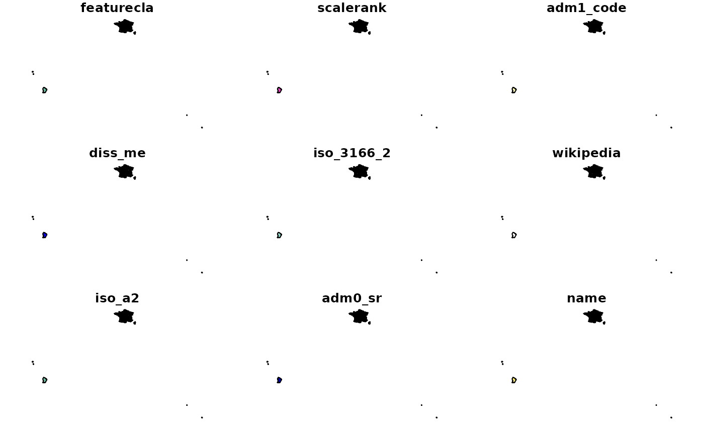
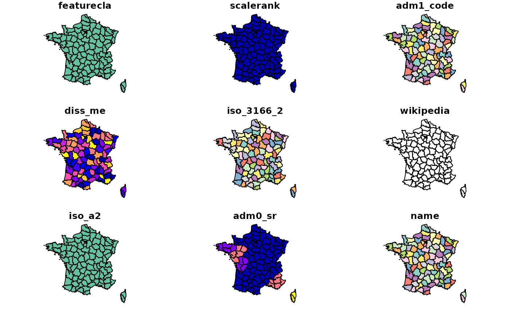
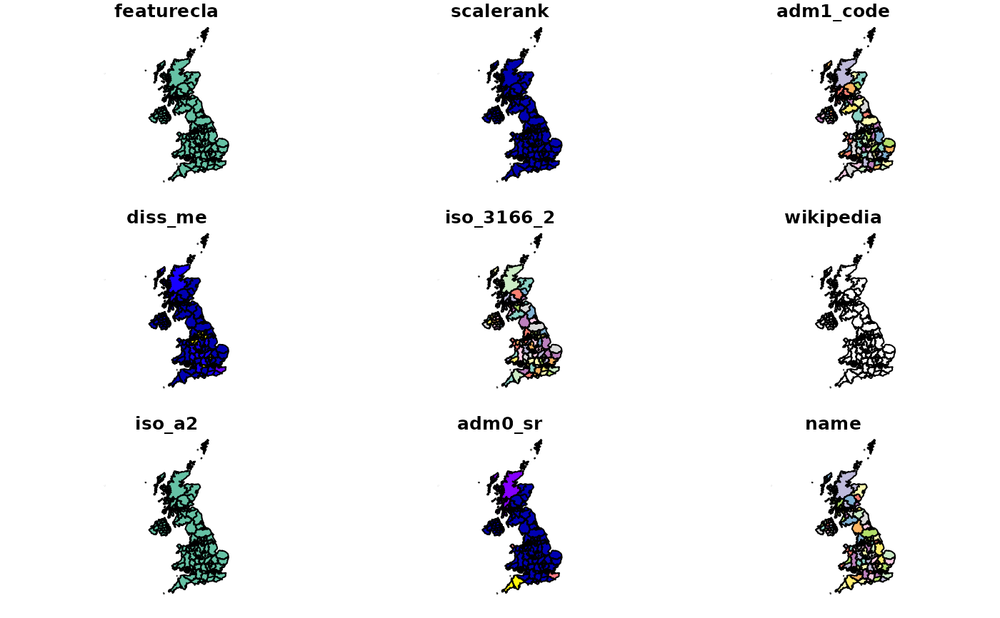
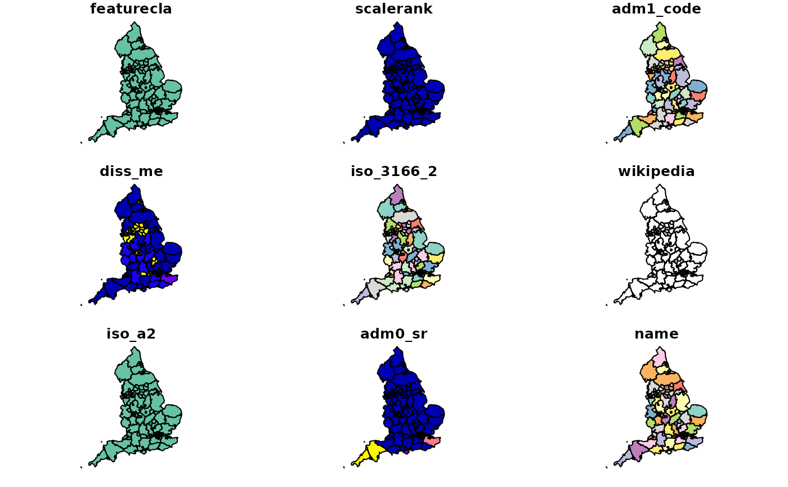

returns state polygons (administrative level 1) for specified countries
Usage
ne_states(
country = NULL,
geounit = NULL,
iso_a2 = NULL,
spat_object = NULL,
returnclass = c("sf", "sv")
)Arguments
- country
a character vector of country names.
- geounit
a character vector of geounit names.
- iso_a2
a character vector of iso_a2 country codes
- spat_object
an optional alternative states map
- returnclass
A string determining the spatial object to return. Either "sf" for for simple feature (from `sf`, the default) or "sv" for a `SpatVector` (from `terra`).
Value
An object of class `sf` for simple feature (from `sf`, the default) or `SpatVector` (from `terra`).
Details
By default, this function uses the scale = 10 data from the rnaturalearthhires package. While data at scales 50 and 110 exist, they are not used as defaults because they contain fewer countries (e.g. scale 50 only includes Australia, Brazil, Canada and United States of America).
states10 <- ne_download(scale = 10L, type = "states", category = "cultural") states50 <- ne_download(scale = 50L, type = "states", category = "cultural") states110 <- ne_download(scale = 110L, type = "states", category = "cultural")
See also
ne_load, pre-downloaded data are available using
ne_countries, ne_states. Other geographic data
are available in the raster package : getData.
Examples
# comparing using country and geounit to filter
if (requireNamespace("rnaturalearthhires")) {
spdf_france_country <- ne_states(country = "france")
spdf_france_geounit <- ne_states(geounit = "france")
plot(spdf_france_country)
plot(spdf_france_geounit)
plot(ne_states(country = "united kingdom"))
plot(ne_states(geounit = "england"))
}
#> Loading required namespace: rnaturalearthhires
#> Warning: plotting the first 9 out of 121 attributes; use max.plot = 121 to plot all

#> Warning: plotting the first 9 out of 121 attributes; use max.plot = 121 to plot all

#> Warning: plotting the first 9 out of 121 attributes; use max.plot = 121 to plot all

#> Warning: plotting the first 9 out of 121 attributes; use max.plot = 121 to plot all
